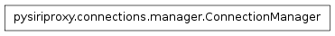

The connection module¶
The connection module contains the Connection class which provides the base functionality for creating concrete connections between two networked computers.
The ConnectionManager class¶

- class pysiriproxy.connections.connection.ConnectionManager(logger=None)¶
The ConnectionManager object managers incoming connection directions and provides the ability to forward data between them.
It allows a connection direction to be connected to an opposite connection direction which allows data to be forwarded from the direction to the connected direction.
- connect(connection)¶
Add a connection to our set of connections.
- connection – The connection object to add
- disconnect(direction)¶
Remove a directed connection from our set of connections.
- direction – The direction of the connection object to remove
- forward(direction, data)¶
Forward the data from one connection to another.
- direction – The direction of the data
- data – The data to forward
- getConnection(direction)¶
Get the connection for the specific direction.
- direction – The direction for the connection to retrieve
- getForwardName(direction)¶
Get the formatted name of the forward direction for the given direction.
- direction – The data direction
- getRefId(direction)¶
Get the most recently used reference id for the connection with the given direction.
- direction – The direction for the connection
- hasConnection(direction)¶
Determine if there is a connection to forward data to.
- direction – The incoming data direction
- injectObject(direction, obj)¶
Inject an object into the connection with the given direction.
- direction – The direction to inject the object
- obj – The object to inject
- resetConnections()¶
Reset all of the connections that are being managed.
- setRefId(refId, direction)¶
Set the ref id for the forward connection.
- refId – The ref id
- direction – The data direction
The Connection class¶

- class pysiriproxy.connections.connection.Connection(name, direction, logger, logColor=0)[source]¶
The Connection class implements the base functionaltiy for creating a concrete twisted internet protocol which is able to receive data in the form of lines.
This base class implements the functionality of receiving data from the iPhone or from Apple’s web server. The iPhone Apple’s web server transmit plist objects which are compressed using zlib compression. This class implements the necessary functionality for receiving the data, and decompressing it to retrieve the plist object data that is being transmitted.
The Connection objects are connected to the connections.ConnectionManager which provides the ability for one Connection to forward data to another Connection.
Note
This class is intended to be subclassed to create a connection between two specific machines.
- connectionFailed(reason)[source]¶
This function is called when a connection failed.
- reason – The reason the connection was lost
- connectionLost(reason)[source]¶
This function is called when a connection is lost.
- reason – The reason the connection was lost
- injectObjectToOutputStream(obj)[source]¶
Inject the given object into the output stream of this connection. This effectively sends the object to the foward destination connection for this connection.
- obj – The object to inject into the output stream
- lineReceived(line)[source]¶
This function is called when a line of data is received.
- line – The line of data